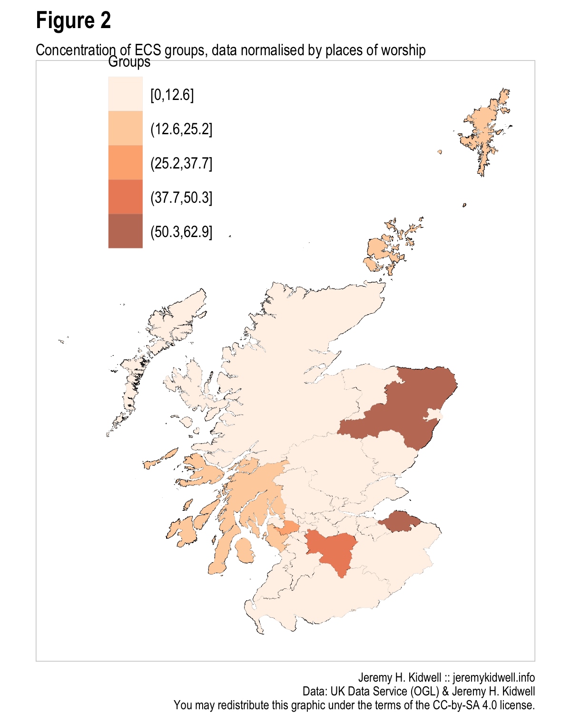
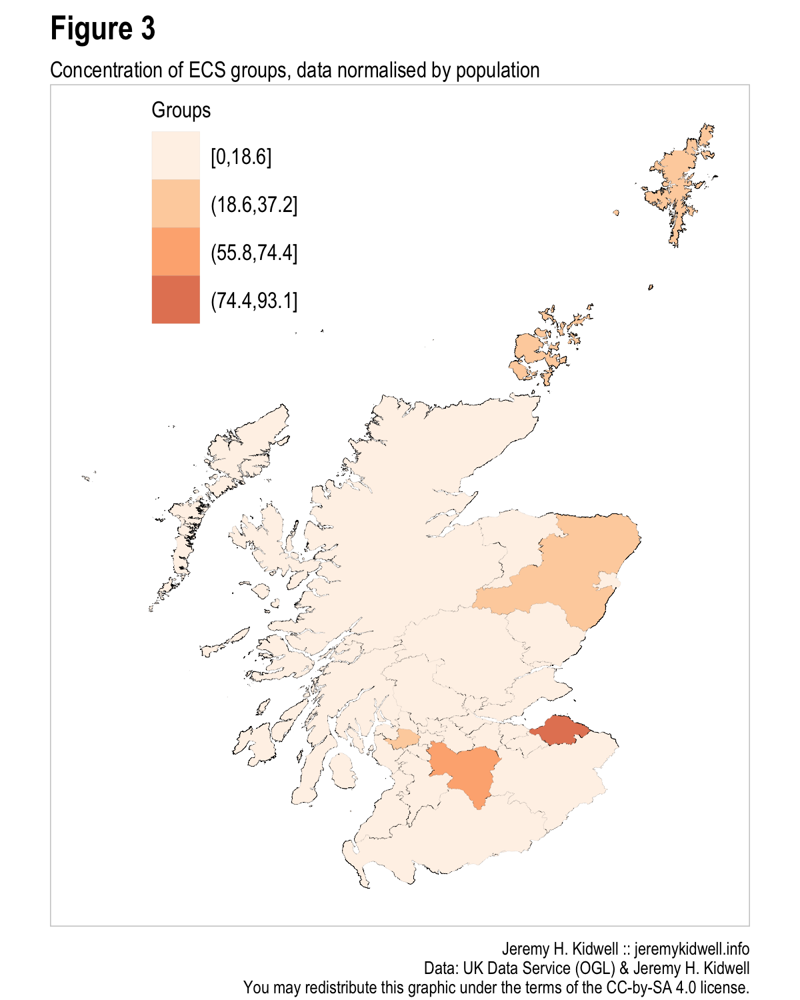
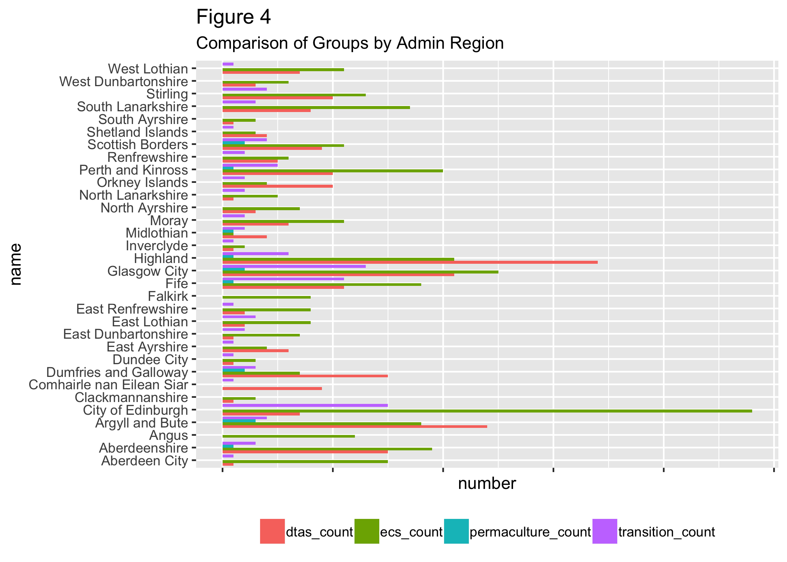
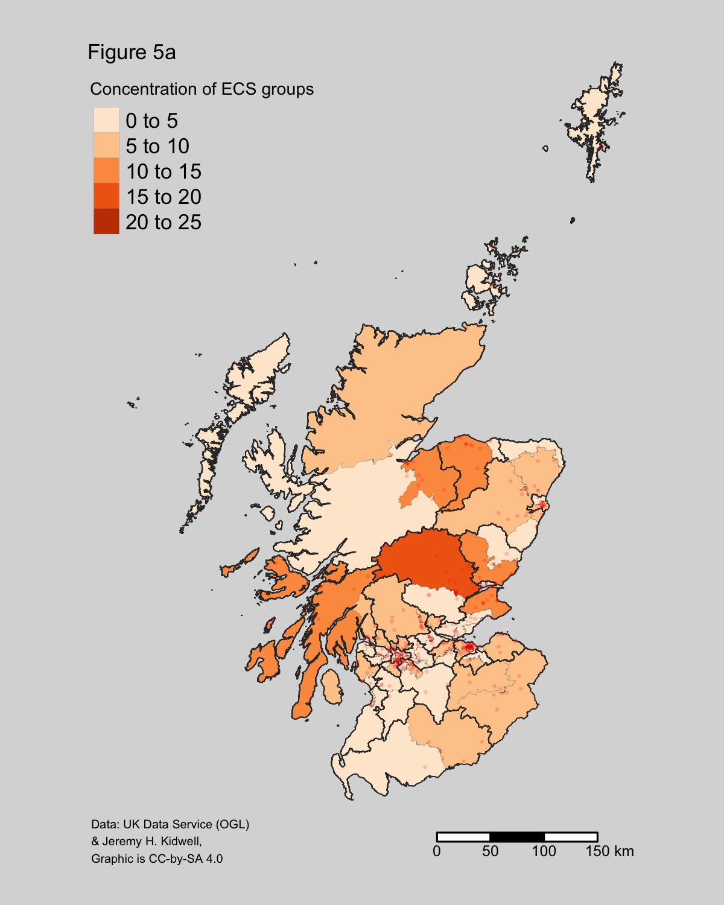
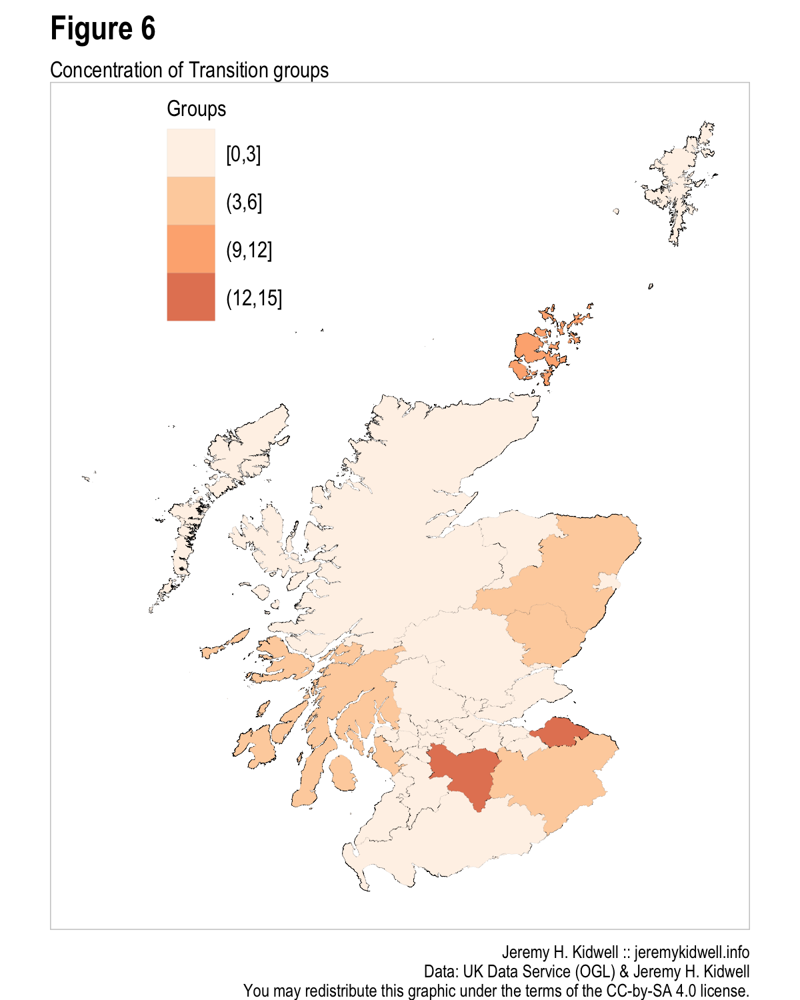
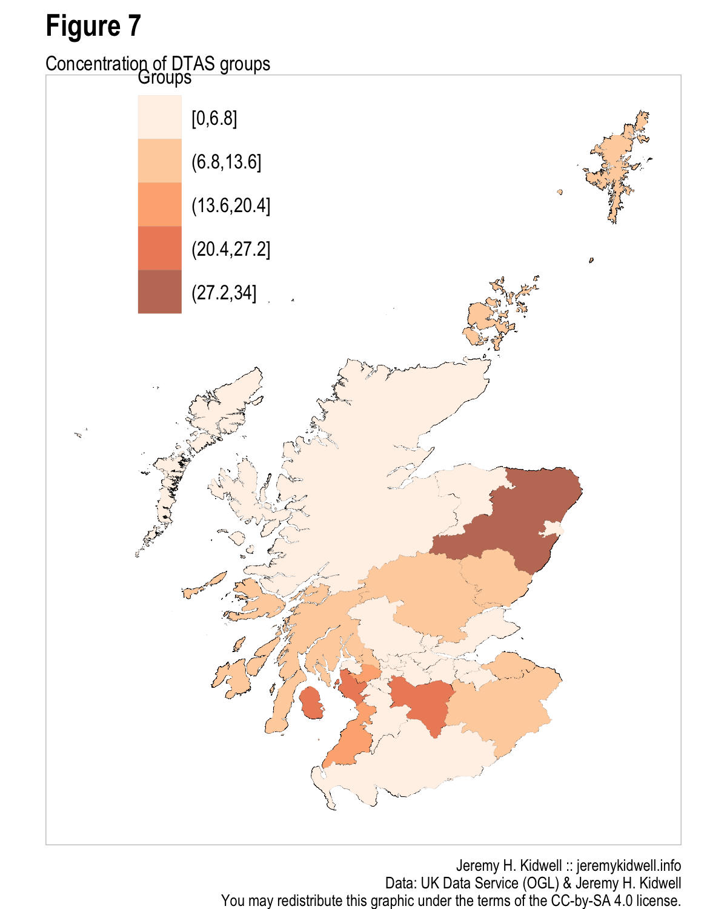
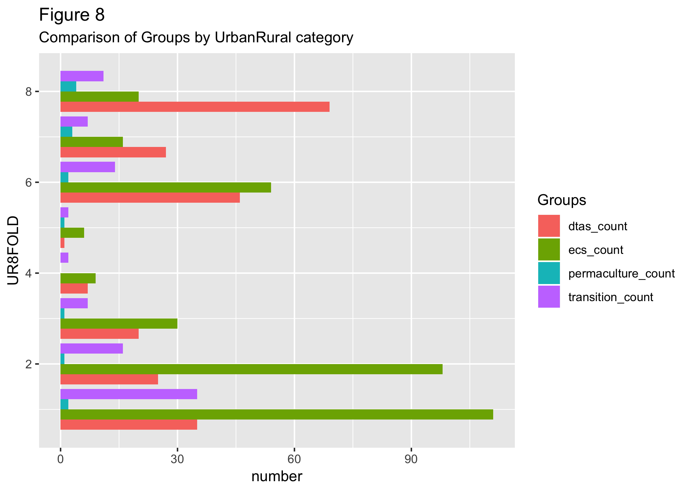
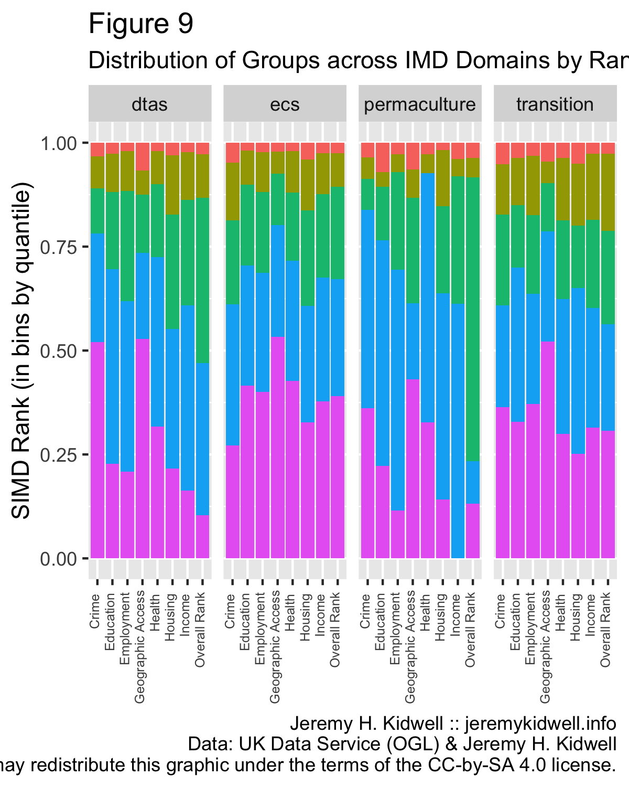

- 1 Introduction
- 2 Eco-Congregation Scotland: The Basics
- 3 Technical Background
- 4 Background and History of Eco-Congregation Scotland
- 5 Representation by Regional Authorities (Council Areas)
- 6 Christian Denominations
- 7 Eco-Congregations, Urban, Rural and Remote
- 8 Wealth, Employment, and Literacy
- 9 Proximity to “Wilderness”
- 10 Appendix A
- 11 Appendix B
- 12 Appendix C - Data by Urban / Rural Classification
- 13 Citations
1 Introduction1
Until recently, environmentalism has been treated by governments and environmental charities as a largely secular concern. In spite of the well-developed tradition of “eco-theology” which began in earnest in the UK in the mid-twentieth century (and which has many precursors in previous centuries), third-sector groups and governments, particularly in Britain and Europe, have largely ignored religious groups as they have gone about their business crafting agendas for behaviour change, developing funding programmes, and developing platforms to mitigate ecological harm, motivate consumers and create regulation regimes. That this has changed is evidenced by the fact that several prominent non-religious environmental groups have commissioned studies and crafted outreach programmes to persons with a particular faith tradition or to “spiritual communities” including RSPB (2013) and the Sierra Club USA (2008).2 Further, since 2008, the Scottish Government has provided a significant portion of funding for the ecumenical charity, Eco-Congregation Scotland, which works to promote literacy on environmental issues in religious communities in Scotland and helps to certify congregations under their award programme. What is not well known, however, even by these religious environmental groups themselves, is whether or how their membership might be different from other environmental groups. This study represents an attempt to illuminate this new interest with some more concrete data about religious groups in Scotland and how they may differ from non-religious counterparts.
2 Eco-Congregation Scotland: The Basics
There are 344 eco-congregations in Scotland. By some measurements, particularly in terms of individual sites and possibly also with regards to volunteers, this makes Eco-Congregation Scotland one of the largest environmental third-sector groups in Scotland.3
In seeking to conduct GIS and statistical analysis of ECS, it is important to note that there some ways in which these sites are statistically opaque. Our research conducted through interviews at a sampling of sites and analysis of a variety of documents suggests that there is a high level of diversity both in terms of the number of those participating in environmental action and the types of action underway at specific sites. Work at a particular site can also ebb and flow over the course of time. Of course, as research into other forms of activism and secular environmental NGOs has shown, this is no different from any other third sector volunteer group. Variability is a regular feature of groups involved in activism and/or environmental concern.
For the sake of this analysis, we took each Eco-Congregation Scotland site to represent a point of analysis as if each specific site represented a community group which had “opted-in” on environmental concern. On this basis, in this section, in the tradition of human geography, we “map” environmental action among religious communities in Scotland a variety of ways. This is the first major geographical analysis of this kind conducted to date in Europe. We measure the frequency and location of ECS sites against a variety of standard geo-referenced statistical data sets, seeking to provide a statistical and geographically based assessment of the participation of religious groups in relation to the following:
- Location within Scotland
- Religious affiliation
- Relation to the Scottish Index of Multiple Deprivation (SIMD)
- Relation to the 8-Fold Scottish Government Urban-Rural Scale
- Proximity to “wilderness” (based on several different designations)
For the sake of comparison, we also measured the geographical footprint of two other forms of community group in Scotland, (1) Transition Towns (taking into account their recent merge with Scotland Communities Climate Action Network) and (2) member groups of the Development Trust Association Scotland (“DTAS”). These two groups provide a helpful basis for comparison as they are not centralised and thus have a significant geographical dispersion across Scotland. They also provide a useful comparison as transition is a (mostly) non-religious environmental movement, and community development trusts are not explicitly linked to environmental conservation (though this is often part of their remit), so we have a non-religious point of comparison in Transition and a non-environmental point of comparison with DTAS
3 Technical Background
Analysis was conducted using QGIS 2.8 and R 3.5.2, and data-sets were generated in CSV format.4 To begin with, I assembled a data set consisting of x and y coordinates for each congregation in Scotland and collated this against a variety of other specific data. Coordinates were checked by matching UK postcodes of individual congregations against geo-referencing data in the Office for National Statistics postcode database. In certain instances a single “congregation” is actually a series of sites which have joined together under one administrative unit. In these cases, each site was treated as a separate data point if worship was held at that site at least once a month, but all joined sites shared a single unique identifier. As noted above, two other datasets were generated for the sake of comparative analysis.5 These included one similar Environmental Non-Governmental Organisation (ENGO) in Scotland (1) Transition Scotland (which includes Scotland Communities Climate Action Network);6 and another community-based NGO, Scottish Community Development Trusts.7 As this report will detail, these three overlap in certain instances both literally and in terms of their aims, but each also has a separate identity and footprint in Scotland. Finally, in order to normalise data, we utilised the PointX POI dataset which maintains a complete database of Places of Worship in Scotland.8
4 Background and History of Eco-Congregation Scotland
Eco-Congregation Scotland began a year before the official launch of Eco-Congregation England and Wales, in 1999, as part of an effort by Kippen Environment Centre (later renamed to Forth Environment Link, or “FEL”) a charity devoted to environmental education in central Scotland9 to broaden the scope of its environmental outreach to churches in central Scotland.10 Initial funding was provided, through Kippen Environment Centre by way of a “sustainable action grant” (with funds drawn from a government landfill tax) through a government programme called Keep Scotland Beautiful (the Scottish cousin of Keep Britain Tidy). After this initial pilot project concluded, the Church of Scotland provided additional funding for the project in the form of staff time and office space. Additional funding a few years later from the Scottish Government helped subsidise the position of a business manager, and in 2011 the United Reformed Church contributed additional funding which subsidised the position of a full-time environmental chaplain for a 5-year term, bringing the total staff to five.
The programme launched officially in 2001 at Dunblane Cathedral in Stirling and by 2005 the project had 89 congregations registered to be a part of the programme and 25 which had completed the curriculum successfully and received an Eco-Congregation award. By 2011, the number of registrations had tripled to 269 and the number of awarded congregations had quadrupled to sum(ecs$award1 < "01/01/2012", na.rm=TRUE). This process of taking registrations and using a tiered award or recognition scheme is common to many voluntary organisations. The ECS curriculum was developed in part by consulting the Eco-Congregation England and Wales materials which had been released just a year earlier in 1999, though it has been subsequently revised, particularly with a major redesign in 2010. In the USA, a number of similar groups take a similar approach including Earth Ministry (earthministry.org) and Green Faith (greenfaith.org).
In the case of Eco-Congregation Scotland, congregations are invited to begin by “registering” their interest in the programme by completing a basic one-sided form. The next step requires the completion of an award application, which includes a facilitated curriculum called a “church check-up” and after an application is submitted, the site is visited and assessed by third-party volunteer assessors. Sites are invited to complete additional applications for further awards which are incremental (as is the application process). Transition communities, at least in the period reflected on their map, go through a similar process (though this does not involve the use of a supplied curriculum) by which they are marked first as “interested,” become “active” and then gain “official” status.11
5 Representation by Regional Authorities (Council Areas)
Perhaps the first important question to ask of these groups is, where are they? I calculated the spread of eco-congregations and transition groups across each of the 32 council areas in Scotland. Every council area in Scotland has at least one eco-congregation or transition group). The most are located in , with 48, whereas the mean among all the 32 council areas is 10.75, with a median of 8, standard deviation of 9.4698162, and interquartile range of 11.5. The following choropleth maps show the relative concentration of eco-congregations (indicated by yellow to red).
(TODO: need to implement) Though there are too few eco-congregations and transition groups for a numerically significant representation in any of the intermediate geographies, mapping the concentration of sites by agricultural parishes allows for a more granular visual and I include this for comparison sake. Note, for the sake of a more accurate visual communication, we have also marked out areas of Scotland that are uninhabited with hash marks on the map of agricultural parishes. (TODO: this will be done in the final draft, once I get my image masking fixed!).12

Figure 1

Given the way population and places of worship are unevenly distributed across Scotland it is important to represent data in terms of relative distribution. For this study, we attempted to “normalise” our data in two different ways, (1) as shown by Figure 2 above, by taking population figures from the 2011 census (see data sheet in Appendix A) and (2) by adjusting relative to the number of places of worship in each council region.13 The latter of these two can yield particularly unexpected results. Thus, of the 4048 “places of worship” in Scotland, the highest concentration is actually the region, with 435, second is 329 (). Rank of Council Areas by population and number of places of worship is also included in Appendix A.
We can use this data to normalise our figures regarding Eco-Congregation Scotland communities and this draws the presence in Edinburgh of ECS communities into even sharper relief, as Edinburgh, though ranked second in terms of population and fifth in terms of places of worship, ranks first for the presence of all ECS congregations and awarded ECS congregations. However, taking population as the basis for normalisation first, we find that Edinburgh is far from the most prominent outlier. In trying to communicate this difference for a lay-audience, we have chosen to list this difference as a multiplier (i.e. there are 2.x times as many congregations as their share of population and an average figure of congregations might allow for) as this conveys the difference in a straight-forward way. Outliers where the disparity between their relative share of the total ECS footprint and their relative share of population is different by a positive ratio of more than double include the Orkney Islands (3.7 times more eco-congregations than their expected average share based on population), Argyll and Bute (admin_lev1[CODE=S12000023]$ecs_pop_factor 4.2x), Stirling (2.76x), and Perthshire and Kinross (2.18x). Interestingly, there are no outliers whose relative share of the total footprint of ECS is double or more in the negative direction (see Appendix A chart for full numbers).
Turning to the total of 4048 “places of worship” in Scotland, we find a slightly different picture of the relative concentration of Eco-Congregations in Scotland. In this case, the outliers are
Whereas our initial measurements indicated a prominent lead for Edinburgh, by normalising our data in this way we can highlight the stronger-than-expected presence of several others that might otherwise escape notice because they lie in a region with significantly lower population or numerically less places of worship. Taking the PointX data on “places of worship” in Scotland, we find a less dramatic picture, but also a slightly different one. The positive outliers include East Renfrewshire (3.4x) Edinburgh (2.9x), Stirling (2.2), West Lothian (1.9x) and Aberdeen (1.5x). Again, negative outliers are far less dramatic, with only Midlothian possessing a ratio of more than 100% negative difference from the number of “places of worship” at 1.5x fewer.

5.1 Concentration of groups
5.1.1 Choropleth

5.1.2 Cartogram
We can compare the representation in these various regions against our comparison groups to see how other community-based organisations cluster in Scottish administrative districts. Here there are some significant contrasts. Scottish Community Development trusts are most intensely concentrated in the Highlands and Argyll & Bute. But, this is consistent with all the other categories, Eco-Congregations, Places of Worship, and dtas are all over-represented in this area, varying only by the degree. Edinburgh is different, here we find that Eco-Congregations and Transition projects are over-represented, while dtass are under-represented. Finally, the highlands are another strong contrast, here we find a very strong over-representation by transition towns and dtass while the representation of Eco-Congregations is relatively close to the population share for that area. The two areas of greatest contrast for Eco-Congregations from the other groups are unsurprising, Edinburgh is the location of the ECS offices, while Stirling is the area in which ECS first began (see Appendix B for full data).
6 Christian Denominations
Eco-Congregation Scotland describes itself as an “ecumenical movement helping local groups of Christians link environmental issues to their faith, reduce their environmental impact and engage with their local community.” There are several ties to the Church of Scotland, as the denomination provides office space to Eco-Congregation Scotland in the Church of Scotland complex at 121 George Street in Edinburgh and provides funding for one full-time member of staff. In spite of this, ECS has, from the start, attempted to emphasise its ecumenical aspirations and this is reflected in a wide variety of ways. The name “eco-congregation” is meant to be tradition neutral (in interviews, staff noted how they have sought to avoid names such as “eco-kirk” which would be the more obvious Presbyterian title, or “eco-community” or “eco-church” which might indicate allegiance towards another). Further, the group has a environmental chaplain on their staff whose position is funded by the United Reformed Church, and other members of staff are funded by the Scottish government, and as such, carry no formal affiliation with a religious institution. This diversity and ecumenicism is reflected in a membership which is, though dominated by the Church of Scotland, nevertheless, made up of a range of Christian traditions.
Though these are not numerically significant, it is important to note that some member congregations describe themselves as ecumenical communities, and others are hybrids reflecting the merging of two traditions. As this ecumenical/hybrid designation involves a small number of the overall total, for the sake of this research, these have been combined into a category called “ecumenical.” Further, as research conducted by Church of Scotland statistician Fiona Tweedie has shown, in many Scottish communities with only one church, members of this church will specify their denominational affiliation in a variety of ways (Roman Catholic, Quaker, Methodist, etc.) even though the church and its minister are formally affiliated with the Church of Scotland.14 So, we should be careful not to assume that the various denominational affiliations of eco-congregations are indicative in an absolute way.
A wide variety of historians and sociologists of religion have noted the regional significance of different Christian denominations in Scotland so we sought to assess the relative distribution and concentration of eco-congregations by denomination. Finding comparative statistics is a complex task, made more complicated by several factors. First, most demographic data on religious belonging in Scotland comes in the form of the 2011 census and as such is far more atomised than this data-set which identifies groups at the level of “congregations” rather than individuals. Equating these two is also complex, as participation by members of congregations can be measured in a variety of ways, there are often a small number of active participants in each eco-congregation group, but may also be a large scale, but passive, support by the wider community.
So why provide this kind of data (i.e. at the level of individual churches) when more granular data (i.e. at the level of individuals persons) is available in the form of the census and related parallel publications such as the 2008 Scottish Environmental Attitudes survey? We believe that mapping places of worship provides a useful intermediate level of analysis and may complement our more atomised understanding of EA which has been assessed at the level of individual persons to date. Because representation within some administrative areas of Scotland, can lead to a small number of data points, we have kept analysis to a National level and have not provided more specific administrative-area level calculations.
| x | |
|---|---|
| Baptist | 4 |
| C of S | 254 |
| C of S / URC | 3 |
| Cong | 1 |
| Ecu | 5 |
| FCS | 1 |
| Independent | 2 |
| Meth | 4 |
| Non. | 1 |
| Quaker | 1 |
| RC | 15 |
| SEC | 41 |
| Unitarian | 1 |
| URC | 11 |
As one might expect, there is a strong representation of the Church of Scotland, almost 74% of eco-congregations, with this number remaining the same when we only count awarded sites. We can confirm, on the basis of this analysis that ECS has a disproportional representation by Church of Scotland churches. At the 2002 church census count, it only represented 40.20% of Scottish churches (1666 of 4144 total churches). Similarly, on the 2011 Scottish census, only 32.44% of persons claimed to be members of the Church of Scotland. We can adjust this representation to 60%, if one excludes the 2,445,204 persons (46% of the total on the census) who reported either “no religion” or adherence to a religious tradition not currently represented among the eco-congregation sites. There is a slight over-representation by the United Reformed church, though this seems considerably more dramatic when one takes into account the fact that this is a trebling or more of their overall share of Scottish churches. The URC makes up only sightly more than 1% of church buildings in Scotland and a tiny 0.04% of respondents to the 2011 census. The Scottish Episcopal church hovers right around a proportional representation within ECS. More concerning are the significant underrepresentation by Roman Catholic churches, Baptists, the Free Church of Scotland, and other independent churches.
While Roman Catholic churches make up just over 10% of the church buildings in Scotland, less than 5% of churches registered as eco-congregations are RC. Even more dramatic is the quartering of baptist churches, and the non-existent representation among the significant group of independent churches and small denominations. These make up nearly 25% of all Scottish churches (over a thousand) and yet only 4 have registered as eco-congregations. We provide several tentative advisories in response to these under-representations in the final section of this paper.
7 Eco-Congregations, Urban, Rural and Remote
## OGR data source with driver: ESRI Shapefile
## Source: "/Users/jeremy/gits/mapping_environmental_action/data", layer: "SG_UrbanRural_2016"
## with 8 features
## It has 6 fieldsRather than bifurcate congregations into an urban/rural dichotomy, for this study we used the Scottish Government’s six-point remoteness scale to categorise eco-congregations along a spectrum of highly populated to remote areas. This 8-fold scale (calculated biennially) offers a more nuanced measurement that combines measurements of remoteness and population along the following lines:
- Large Urban Areas - Settlements of over 125,000 people.
- Other Urban Areas - Settlements of 10,000 to 125,000 people.
- Accessible Small Towns - Settlements of between 3,000 and 10,000 people, and within a 30 minute drive time of a Settlement of 10,000 or more.
- Remote Small Towns - Settlements of between 3,000 and 10,000 people, and with a drive time between 30 and 60 minutes to a Settlement of 10,000 or more.
- Very Remote Small Towns - Settlements of between 3,000 and 10,000 people, and with a drive time of over 60 minutes to a Settlement of 10,000 or more.
- Accessible Rural Areas - Areas with a population of less than 3,000 people, and within a drive time of 30 minutes to a Settlement of 10,000 or more.
- Remote Rural Areas - Areas with a population of less than 3,000 people, and with a drive time of between 30 and 60 minutes to a Settlement of 10,000 or more.
- Very Remote Rural Areas - Areas with a population of less than 3,000 people, and with a drive time of over 60 minutes to a Settlement of 10,000 or more.
The key question which this analysis seeks to answer is whether ECS, or the other groups surveyed, are more concentrated in Urban or Rural areas, so as is the case below with our analysis of deprivation, we are concerned with the outer conditions, i.e. the urban areas (items 1-2) and remote areas (items 7-8).
Of all the groups surveyed in this study, Eco-Congregation Scotland is the most heavily concentrated in large urban areas (33.53%), exceeding by almost 50% the rate for all places of worship (22.96% in large urban areas). Transition is a much more modest 20% and development trusts a bit lower at 15%. It is interesting to note that the rate of ECS concentration in these large urban areas matches the level of overall population distribution (34.5%). On the other end of the scale, Eco-Congregation Scotland is the least concentrated in remote rural areas (with 3.93% on level 7 and 5.44% on level 8 on the urban-rural scale), though again, they correlate roughly to the general population distribution (3.2% and 2.9% respectively). Places of worship outpace both the population of Scotland and the footprint of Eco-Congregation Scotland, with 14.98% in very remote rural areas, but this is exceeded by transition at 16.47% and both by Scottish community development trusts at 32.14%. So while Eco-Congregation Scotland correlates roughly with Scottish population distribution across the urban-rural scale, it has a considerably more urban profile than either of the other two groups surveyed.

Figure 9
8 Wealth, Employment, and Literacy
## OGR data source with driver: ESRI Shapefile
## Source: "/Users/jeremy/gits/mapping_environmental_action/data", layer: "sc_dz_11"
## with 6976 features
## It has 9 fields8.1 SIMD representation across domains by group
8.1.1 Jitterplot
8.1.2 Barplot

8.1.3 Boxplot
Another crucial point of assessment relates to the relation of Eco-Congregation communities to the Scottish Index of Multiple Deprivation. This instrument aggregates a large variety of factors which can lead to deprivation including crime rates, employment levels, access to services (implicating remoteness), and literacy. By assessing ECS, Transition, and dtas against the deprivation scale, we can assess whether eco-congregations fall within particular demographics and also whether the fully aggregated SIMD measurement provides a useful point of comparison for our purposes. The SIMD essentially divides Scotland into 6407 geographic zones and then ranks them based on their relative deprivation. This data set can be split into any number of groups, but for our purposes we have settled on Quintiles, splitting the SIMD data set at every 1302 entries. We then measured where each transition group, ECS, and dtas fell within these zones and calculated how they fell into these five quintiles, from more to least deprived.
The first, and most compelling finding is that, in general Eco-Congregation Scotland and Transition Scotland are both roughly the same and match the level of population distribution in the lowest quintile of the general SIMD measurement. 8% of transition groups and eco-congregation groups which have received awards and 9% of the population are located within this quintile. However, taken in relation to the distribution of places of worship in the lowest quintile, we find that eco-congregations are located at half the rate that places of worship are (15%) and dtass match this much more closely at 14%. Turning towards the top quintile, this pattern also holds, here both transition groups (21%) and eco-congregations (21% and 29% of awarded congregations) depart from the population distribution in this upper quintile (which is 10%). Again, general places of worship (at 11%) and DTASs (at 5%) take the opposite direction. We can say decisively that in communities which have been identified as good candidates for intervention to reduce deprivation, ECS and Transition are less likely, and they are over-represented at the areas which fall into the least deprived quintile.
We can find divergence between transition communities and eco-congregation when we split out SIMD domains. In the lowest quartile, measuring exclusively for the income domain, ECS is more represented (11%) - roughly the same as DTAS (12%), and transition is less (6%) represented. In general (as shown on the chart in Appendix D), these trends hold when representation of our groups are measured within other non-remoteness domains of the SIMD. Our basic conclusion is that transition towns are least likely to operate within the lowest quartile of SIMD and DTASs are most likely, with ECS somewhere in the middle. Given the general disparity against the presence of places of worship, it seems fair to suggest that this might be an area for improvement, perhaps even worth developing a special programme which might target areas in SIMD quartile 1 for eco-congregation outreach. This might be considered particularly in light of the starkest underrepresentation of ECS and transition within the SIMD domain of education, skills, and training.
## Reading layer `SSSI_SCOTLAND' from data source `/Users/jeremy/gits/mapping_environmental_action/data/SSSI_SCOTLAND.shp' using driver `ESRI Shapefile'
## Simple feature collection with 15872 features and 7 fields
## geometry type: POLYGON
## dimension: XY
## bbox: xmin: -296506.9 ymin: 530237.9 xmax: 467721.5 ymax: 1220310
## epsg (SRID): NA
## proj4string: +proj=tmerc +lat_0=49 +lon_0=-2 +k=0.9996012717 +x_0=400000 +y_0=-100000 +datum=OSGB36 +units=m +no_defs## OGR data source with driver: ESRI Shapefile
## Source: "/Users/jeremy/gits/mapping_environmental_action/data", layer: "SSSI_SCOTLAND"
## with 15872 features
## It has 7 fields
## Integer64 fields read as strings: PA_CODE## Reading layer `WILDLAND_SCOTLAND' from data source `/Users/jeremy/gits/mapping_environmental_action/data/WILDLAND_SCOTLAND.shp' using driver `ESRI Shapefile'
## Simple feature collection with 42 features and 3 fields
## geometry type: MULTIPOLYGON
## dimension: XY
## bbox: xmin: 76877.24 ymin: 578454.1 xmax: 435367.1 ymax: 1190510
## epsg (SRID): NA
## proj4string: +proj=tmerc +lat_0=49 +lon_0=-2 +k=0.9996012717 +x_0=400000 +y_0=-100000 +datum=OSGB36 +units=m +no_defs## OGR data source with driver: ESRI Shapefile
## Source: "/Users/jeremy/gits/mapping_environmental_action/data", layer: "WILDLAND_SCOTLAND"
## with 42 features
## It has 3 fields## Reading layer `National_Forest_Inventory_Woodland_Scotland_2017' from data source `/Users/jeremy/gits/mapping_environmental_action/data/National_Forest_Inventory_Woodland_Scotland_2017.shp' using driver `ESRI Shapefile'
## Simple feature collection with 199698 features and 7 fields
## geometry type: POLYGON
## dimension: XY
## bbox: xmin: 65210.1 ymin: 532547.9 xmax: 461253.7 ymax: 1209179
## epsg (SRID): NA
## proj4string: +proj=tmerc +lat_0=49 +lon_0=-2 +k=0.9996012717 +x_0=400000 +y_0=-100000 +datum=OSGB36 +units=m +no_defs## OGR data source with driver: ESRI Shapefile
## Source: "/Users/jeremy/gits/mapping_environmental_action/data", layer: "National_Forest_Inventory_Woodland_Scotland_2017"
## with 199698 features
## It has 7 fields
## Integer64 fields read as strings: OBJECTID9 Proximity to “Wilderness”
Chasing down a curiosity, I decided to try and calculate whether proximity to “wilderness” or “scenic nature” or just trees might have some impact on generating more mobilised communities. I realised that there would be several problems with this kind of calculation up front, first being that “nature” is a deeply problematic construct, reviled by geographers and philosophers alike. With this in mind, I identified several different ways of reckoning wilderness, starting with the highly anachronistic “Scenic Land” designation from the 1970s. Then I pursued the more carefully calculated “core wild areas” generated by SNH just a few years ago. However, even the core wile areas concept has been criticised heavily, so I also expanded out my search to include all sites of special scientific interest and then went even wider to include the Scottish Forestry Service’s “Native Woodland” and finally, the most generic possible measurement, any land identified as forested at the last Forest Inventory.
Proximity to these areas was the next concern, because many of these designations deliberately exclude human habitat, so it was necessary to measure the number of sites within proximity. There is a question which lies here regarding aesthetics, namely, what sort of proximity might generate an affective connection? From my own experience, I decided upon the distance represented by a short walk, i.e. a half-kilometre. However, with the more generic measurements, such as SSSI and forestation, this wouldn’t do, as there are so many of these sites that a buffer of 500 meters encapsulates almost all of inhabited Scotland. So for these sites I also calculated a count within 50 metres.
So what did I discover? The results were inconclusive. First, it is important to note that on the whole, Eco-Congregations tend to be more urban than place of worship taken generally at a rate of nearly 3:1 (5.4% of Eco-Congregations lie in areas currently designated as “Very Remote Rural Areas” whereas nearly 15% of places of worship lie in these areas), so what I was testing for was whether this gap was smaller when specifying these various forms of “wild” remoteness. For our narrowest measurements, there were so few sites captured as to render measurement unreliable. There are, for obvious reasons, 0 sites located within any of SNG’s core wild areas. Similarly, there are very few of our activist communities located within SSSI’s (only st_within(pow_pointX_sf, sssi) places of worship out of 4048, st_within(transition_sf, sssi) transition towns, (or 2%) and st_within(dtas_sf, sssi) community development trusts (3%)). However, expanding this out makes things a bit more interesting, within 50 metres of SSSI’s in Scotland lie st_within(ecs_sf, st_buffer(sssi, dist = 50)) Eco-Congregations (or just under 1%), which compares favourably with the st_within(pow_pointX_sf, st_buffer(sssi, dist = 50)) places of worship (or just 1.5%) far exceeding our ratio (1:1.5 vs. 1:3). This is the same with our more anachronistic measure of “scenic areas,” there are 7 eco-congregations within these areas, and 175 places of worship, making for a ratio of nearly 1:2 (2.1% vs. 4.3%). Taking our final measure, of forested areas, this is hard to calculate, as only one Eco-Congregation lies within either native or generally forested land.
| titles | Within SSSIs | …50m | …500m |
| ecs_wilderness_row | 0 | 3 | 59 |
| pow_wilderness_row | 7 | 62 | 610 |
| dtas_wilderness_row | 7 | 11 | 49 |
| transition_wilderness_row | 0 | 1 | 17 |
| permaculture_wilderness_row | 0 | 0 | 3 |
10 Appendix A
| name | ecs_count | pow_count | dtas_count |
|---|---|---|---|
| Fife | 18 | 243 | 11 |
| South Ayrshire | 3 | 68 | 1 |
| Inverclyde | 2 | 53 | 1 |
| Aberdeen City | 15 | 96 | 1 |
| Highland | 21 | 435 | 34 |
| West Dunbartonshire | 6 | 52 | 3 |
| Moray | 11 | 103 | 6 |
| Orkney Islands | 4 | 50 | 10 |
| Aberdeenshire | 19 | 244 | 15 |
| East Renfrewshire | 8 | 37 | 2 |
| Clackmannanshire | 3 | 30 | 1 |
| East Ayrshire | 4 | 68 | 6 |
| North Lanarkshire | 5 | 187 | 1 |
| Dundee City | 3 | 94 | 1 |
| Argyll and Bute | 18 | 172 | 24 |
| Angus | 12 | 106 | 0 |
| Glasgow City | 25 | 329 | 21 |
| East Dunbartonshire | 7 | 43 | 1 |
| Shetland Islands | 3 | 89 | 4 |
| Scottish Borders | 11 | 153 | 9 |
| Comhairle nan Eilean Siar | 0 | 114 | 9 |
| Renfrewshire | 6 | 84 | 5 |
| North Ayrshire | 7 | 96 | 3 |
| East Lothian | 8 | 71 | 2 |
| Falkirk | 8 | 83 | 0 |
| West Lothian | 11 | 70 | 7 |
| Perth and Kinross | 20 | 162 | 10 |
| Dumfries and Galloway | 7 | 189 | 15 |
| Stirling | 13 | 73 | 10 |
| City of Edinburgh | 48 | 233 | 7 |
| Midlothian | 1 | 45 | 4 |
| South Lanarkshire | 17 | 176 | 8 |
| permaculture_count |
|---|
| 1 |
| 0 |
| 0 |
| 0 |
| 1 |
| 0 |
| 0 |
| 0 |
| 1 |
| 0 |
| 0 |
| 0 |
| 0 |
| 0 |
| 3 |
| 0 |
| 2 |
| 0 |
| 0 |
| 2 |
| 0 |
| 0 |
| 0 |
| 0 |
| 0 |
| 0 |
| 1 |
| 2 |
| 0 |
| 0 |
| 1 |
| 0 |
11 Appendix B
(JK note to self: same as above, but augmented with multipliers by which categories are different from one another)
12 Appendix C - Data by Urban / Rural Classification
| UR8FOLD | ecs_count | ecs_percent | pow_count | pow_percent | transition_count |
|---|---|---|---|---|---|
| 1 | 111 | 0.32 | 907 | 0.22 | 35 |
| 2 | 98 | 0.28 | 1015 | 0.25 | 16 |
| 3 | 30 | 0.087 | 265 | 0.065 | 7 |
| 4 | 9 | 0.026 | 100 | 0.025 | 2 |
| 5 | 6 | 0.017 | 87 | 0.021 | 2 |
| 6 | 54 | 0.16 | 696 | 0.17 | 14 |
| 7 | 16 | 0.047 | 372 | 0.092 | 7 |
| 8 | 20 | 0.058 | 606 | 0.15 | 11 |
| transition_percent | dtas_count | dtas_percent | permaculture_count |
|---|---|---|---|
| 0.37 | 35 | 0.15 | 2 |
| 0.17 | 25 | 0.11 | 1 |
| 0.074 | 20 | 0.087 | 1 |
| 0.021 | 7 | 0.03 | 0 |
| 0.021 | 1 | 0.0043 | 1 |
| 0.15 | 46 | 0.2 | 2 |
| 0.074 | 27 | 0.12 | 3 |
| 0.12 | 69 | 0.3 | 4 |
| permaculture_percent |
|---|
| 0.14 |
| 0.071 |
| 0.071 |
| 0 |
| 0.071 |
| 0.14 |
| 0.21 |
| 0.29 |
13 Citations
This research was jointly funded by the AHRC/ESRC under project numnbers AH/K005456/1 and AH/P005063/1.↩
This is not to say that there have been no collaborations before 2000, noteworthy in this respect is the WWF who helped to found the Alliance of Religion and Conservation (ARC) in 1985.↩
This suggestion should be qualified - RSPB would greatly exceed ECS both in terms of the number of individual subscribers and budget. The RSPB trustee’s report for 2013-2014 suggests that their member base was 1,114,938 people across Britain with a net income of £127m - the latter of which exceeds the Church of Scotland. If we adjust this based on the Scottish share of the population of the United Kingdom as of the 2011 census (8.3%) this leaves us with an income of £9.93m. The British charity commission requires charities to self-report the number of volunteers and staff, and from their most recent statistics we learn that RSPB engaged with 17,600 volunteers and employed 2,110 members of staff. Again, adjusted for population, this leaves 1,460 volunteers in Scotland and 176 staff. However, if we measure environmental groups based on the number of sites they maintain, RSPB has only 40 reserves with varying levels of local community engagement. For comparison, as of Sep 14 2015, Friends of the Earth Scotland had only 10 local groups (concentrated mostly in large urban areas). Depending on how one measures “volunteerism,” it may be possible that ECS has more engaged volunteers in Scotland as well - if each ECS group had only 4 “volunteers” then this would exceed RSPB.↩
Kidwell, Jeremy. (2016). Eco-Congregation Scotland, 2014-2016. University of Edinburgh. http://dx.doi.org/10.7488/ds/1357.↩
For further detail on Dataset generation, see Kidwell, Forthcoming, 2018.↩
My dataset on transition towns will be made available later in 2016. Initial data was aquired from the Transition Scotland website http://www.transitionscotland.org/transition-in-scotland on December 10, 2014. We are currently in the process of collaboratively generating a more up-to-date dataset which will reflect their collaboration with SCCAN.↩
Data was acquired from the Development Trusts Association website, http://www.dtascot.org.uk, accessed on 20 July 2015. As above, we are currently in the process of active collaboration with volunteers from the DTAS to co-generate a new dataset.↩
PointX data for “Landscape Data” items is sourced from Ordnance Survey Land-Line and MasterMap(R) and the data points are augmented with additional information provided through research by PointX staff, and data aquired from unidentified “local data companie(s)” and the “118 Information” database (see: http://www.118information.co.uk). This data is under license and cannot be made available for use. It is important to note that I became aware of inaccuracies in this dataset over the course of use and subsequently generated my own dataset in collaboration with churches in Scotland. This will be made available later in 2016. I am in active conversation with OS about improving the quality of the data in PointX regarding places of worship.↩
From http://www.forthenvironmentlink.org, accessed 12 July 2015.↩
Interview with Margaret Warnock, 29 Aug 2014.↩
From the Transition map key, “Green pins are ‘official’ groups Blue pins are active communities who are connected to the Scottish Transition network Yellow pins show interest in this area”↩
This was calculated by calculating a 10m wide footprint for every postcode in Scotland, areas which are not within 10m of a postcode (as of May 2014) are counted as uninhabited.↩
See note above regarding the data used from the PointX POI database. Note, for our research,we filtered out religious groups not represented within the Eco-Congregation footprint. We discuss representation by tradition and religion further below.adition and religion further below.↩
Fiona Tweedia, Ecumenical Audit: Questionnaire Findings (2014).↩